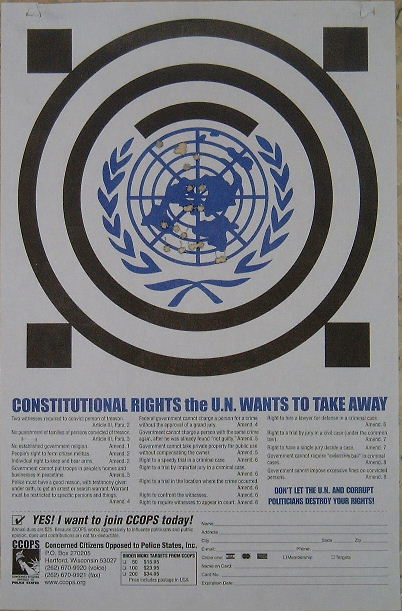
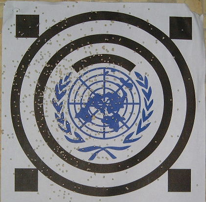
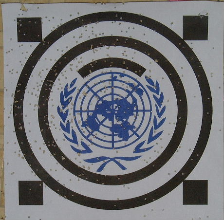
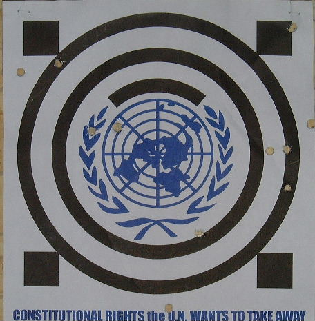
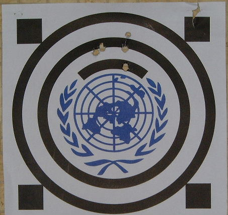

Click on any image for a higher res version.
The image below was two groups of ten shot at 25 yards from my Ruger K10/22RP .22 caliber auto-loading rifle. The lower group with the pen marks was my third group of the day. The upper group was my fourth of the day. Both were shot sitting on a chair with my arms propped on a bench. I shot them fairly quickly, mostly one breath per shot. The text is legible in the high-res version. 6:45pm, 10 August, 2001.

The image below was two shells from my L.C. Smith shotgun loaded with #8 shot at about 23 yards. I stapled the target to a box and set it out in the field. It fell over towards me after each shot. I stood while shooting. 7:15pm, 17 August, 2001.

The image below was the first two shells from my Remington 870 Express shotgun loaded with #7 1/2 shot at about 23 yards. Looks like fewer holes to me, likely because the shot is larger so fewer pellets fit in a shell. I think this gun is choked more than the L.C. Smith. It's got a full choke. I don't know the choke of the old gun. 6:30pm, 31 August, 2001.

The image below was two shells from my Remington 870 Express shotgun loaded with 00 BK buckshot, 12 pellets per shell, at about 23 yards. Same full choke as the image above. I mounted the target on a box. There are 11 holes in the target, and I counted 4 more in the box. The other 9 missed the box, likely went over the top (the top of the target was aligned with the top of the box to get it as far off the ground as I could). The shells had 4 DR EQ of powder, a real good kick compared to the target loads I've been shooting. The Remington box says this is bear ammo. I wouldn't want to be on the receiving end. 6:45pm, 4 September, 2001.

.30/06, 100 yards, five shots (four in magazine, one in chamber, about
30 seconds apiece), front of gun on bench rest, rear on my
shoulder. Wasn't quite sighted in, but the group's good, so I saved
it. This is fairly stiff paper, so the holes are larger than on an my
NRA targets. 6:00pm, 21 September, 2001.
